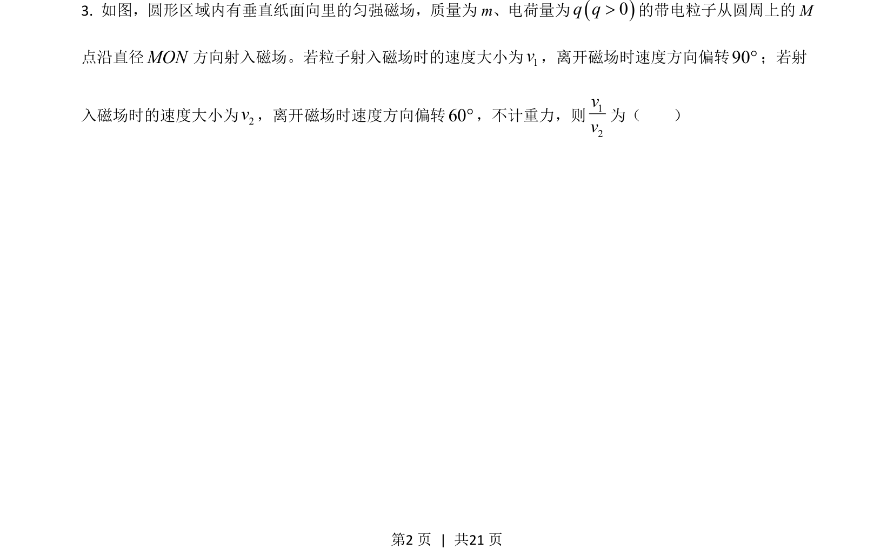
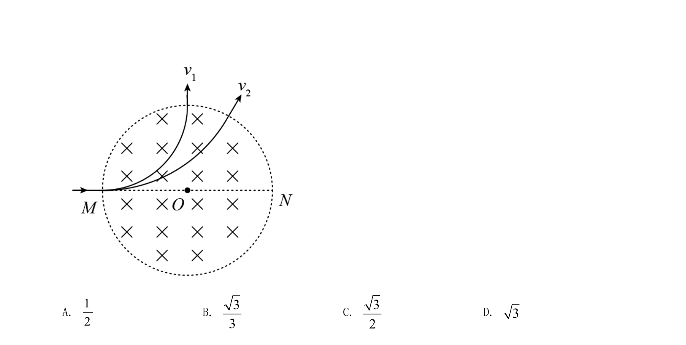
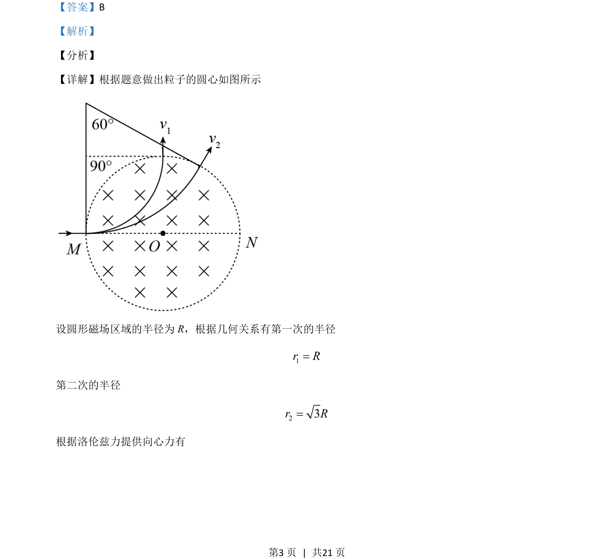

2021-全国乙-03
吉林2021卷全国乙不分题3题型选择难中
考点：洛伦兹力提供向心力 带电粒子在磁场中的圆周运动 几何关系
题面


摘要
带电粒子在圆形磁场区域运动，结合几何关系求速度比
关联考点
答案与解析

📄 原 PDF 第 2 页：素材/真题/吉林/2008-2024·（吉林）物理高考真题/2021年高考物理试卷（全国乙卷）（解析卷）.pdf
题干文本
- 如图，圆形区域内有垂直纸面向里的匀强磁场，质量为m、电荷量为()0q q>的带电粒子从圆周上的 M
点沿直径MON方向射入磁场。若粒子射入磁场时的速度大小为1v，离开磁场时速度方向偏转90°；若射
入磁场时的速度大小为2v，离开磁场时速度方向偏转60°，不计重力，则12vv为（ ）
解析文本